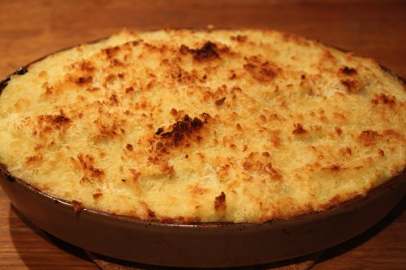

Linzenschotel

bereidingstijd: 30 minuten (excl. 60 minuten pruttelen)
aantal personen: 4
De ingrediënten in dit recept zijn voor 4 personen. Wil je dit voor meer of minder personen klaarmaken? Dat kan.
ingrediënten
voor de groentestoofpot met linzen
- 175 g linzen (soort naar keuze)
- 1 dikke ui
- 3 stengels selder
- 2 wortels
- 2 teentjes look
- 4 takjes tijm
- 2 blaadjes laurier
- 1 takje rozemarijn
- 250 g tomatenstukjes (blik)
- 5 dl passata
- 1 snuifje gerookt (of mild) paprikapoeder
- 1 snuifje gedroogde oregano
- 1 snuifje selderzout
- 1 snuifje cayennepeper (naar smaak)
- 6 eetlepels paneermeel (of panko)
- scheutjes olijfolie
voor de aardappelpuree
- 800 g aardappelen (loskokend)
- 1 ei
- 1 scheutje melk
- nootmuskaat
- zout
Bereiding
voor de groentestoofpot met linzen
- Spoel de linzen onder een koude waterstraal. Gebruik naar keuze groene, gele of rode linzen.
- Pel de ui en snij hem grof. Pel de look en doe de tenen samen met de uien in de beker van de hakmolen. Hak alles fijn, maar maak er geen puree van!
- Verhit olijfolie in een ruime stoofpot. Stoof de gehakte uien met look glazig.
- Spoel de selderstengels schoon en schil de wortelen. Snij beide grof en doe ze in de hakmolen. Hak ze minstens zo fijn als de ui.
- Stoof de groentemix mee in de pot met ui en look. Voeg tijdig een beetje extra olijfolie toe.
- Giet vervolgens de linzen in de pot, roer en doe er tijm, laurier en rozemarijn bij.
- Schenk de passata en de blokjes tomaat bij de linzen. Roer en voeg kort nadien kruiden en specerijen toe. Ik kies voor een snuif gerookt of mild paprikapoeder, oregano, selderijzout en een beetje cayennepeper.
TIP: Je kan de tomatenstukken uit blik ook vervangen door halve kerstomaatjes.
- Laat alles ong. 60 minuten pruttelen onder een deksel, op een zacht vuur, tot de linzen zacht zijn.
- Proef de groentestoofpot met linzen en kruid indien nodig met extra zout en/of cayennepeper. De linzen moeten voldoende gaar zijn.
- Schep de stoofpot in een ruime ovenschaal of een braadslede. Strijk het oppervlak glad. (Laat ruimte voor de puree!)
voor de aardappelpuree
- Schil de aardappelen en kook ze gaar in licht gezouten water.
- Stamp ze tot puree die je op smaak brengt met wat melk, een eidooier, een klont boter, vers geraspte nootmuskaat en wat zout.
- Schep de aardappelpuree bovenop de groenten en strijk opnieuw het oppervlak glad. Strooi er een dun laagje paneermeel (of panko) over, en een likje olijfolie.
- Gratineer de schotel onder de ovengrill tot er een goudbruin korstje op ligt en serveer.